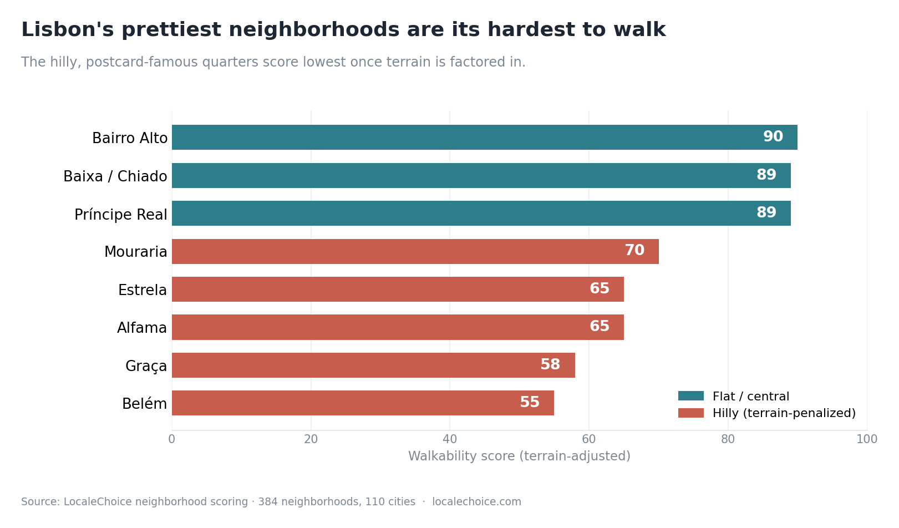

Why Your Last Trip Was So Tiring (It Wasn't You — It Was the Neighborhood You Booked)
We scored 384 neighborhoods across 110 European cities. The data explains a frustration almost every traveler has felt but never quite named.

You did everything right. You skipped the bland hotel district, found a gorgeous apartment in the neighborhood everyone raves about — the one with the cobblestones and the rooftop views.
And then the trip was somehow… exhausting.
You were always climbing something, the good restaurants were a tram ride away, getting to the airport was a massive saga, and by day three you were quietly resentful of the view you'd paid extra for.
That frustration is real, it's common, and — this is the part nobody tells you — it's usually entirely predictable before you book. We know because at LocaleChoice, we scored 384 neighborhoods across 110 European cities on seven distinct factors. The same hidden traps kept appearing. Here are the four data patterns that explain most bad stays.
01The view you booked is a photo someone took while walking uphill
This was the single most consistent surprise in our dataset: the neighborhoods that sell a city visually are frequently the hardest ones to actually move around in.
Take Lisbon. Alfama is arguably the most photographed neighborhood in Portugal — but once you account for its brutal terrain gradient, its walkability score drops into the mid-60s. Graça falls into the high 50s. Meanwhile flat, grid-shaped Bairro Alto and central Baixa sit at the very top of the scale.
It isn't just a Lisbon quirk. Anywhere the prettiest quarter sits on a hill, the same thing happens.
The photo that made you book the apartment was usually taken pointing up. Lovely to look at, but punishing with a suitcase, a stroller, or tired legs.
02"Walkable" can quietly mean "stranded"
A high walkability score sounds like a guarantee of a seamless stay. It isn't — because walkability only measures how good a neighborhood is on foot within itself. It says nothing about how easily you can escape it.
The data is full of places that are a dream to wander but a genuine pain to leave. Antwerp's historic centre scores a perfect 90 on foot but sits near the bottom for transit — a massive 50-point gap. Malmö's old town, Barcelona's El Raval, and San Sebastián's Parte Vieja all show the exact same split: wonderful inside, poorly connected to everywhere else.
These are perfect bases if your trip happens entirely within those few blocks — but a daily ordeal if you're commuting across town or catching early flights. One generic word, "walkable," hides which of those two trips you've actually booked.
03Your best meals were nowhere near the famous sights
Here is a travel frustration in reverse: you stayed near the historic monuments for convenience, and ate terribly the whole time. The data says you were very likely to.
Our food signal points stubbornly away from tourist cores. The two highest-scoring food neighborhoods in our entire European set are San Sebastián's Parte Vieja and Rome's Testaccio — a working, unglamorous Roman district famous to locals for its markets and trattorias, located nowhere near the Colosseum circuit most visitors anchor to.
In Lisbon, unfashionable Mouraria out-eats the marquee districts. In Copenhagen, Nørrebro wins. Stay exclusively for proximity to famous sights and you are, measurably, staying away from the best culinary experiences.
04The trade-off nobody warns you about: buzz vs. sleep
The neighborhoods that top our atmosphere ratings — like Copenhagen's Nørrebro or Lisbon's Cais do Sodré — score among the lowest for family suitability.
The vibrant energy that makes a street irresistible at 11:00 PM is the exact same energy that makes it brutal with a five-year-old at 8:00 AM. Couples discover this as noise; families discover it as a ruined trip.
The rare exception worth knowing? Paris's Le Marais scores near the top on both buzz and family workability. But it's an outlier, not a template. For most cities, you are picking one or the other — and you're far happier picking on purpose than finding out on night one.
One honest note on our numbers
We don't pretend all seven of our factors fell out of a cold machine. Four are strictly algorithmic: walkability and family metrics are drawn from mapped pedestrian and park data; transit is calculated from real physical distances; food comes from density signals.
Three factors — safety, value, and atmosphere — rely on our team's editorial judgment, and we openly label them that way. We also keep scores in deliberately coarse bands; an 88 versus an 85 is, for your trip, the exact same place. The patterns hold because they're large and consistent, not because of decimal-point precision.
How to fix your next trip
Every pattern above is a question you can easily answer before you enter your credit card details:
- Is this gorgeous neighborhood secretly an exhausting stairwell?
- Is "walkable" hiding a transit dead-zone?
- Will the nightlife keep my kids awake?
The frustrating part of travel planning has always been that this information was scattered across thousands of conflicting reviews, outdated blog posts, and blind gut feel. That is the exact gap we built LocaleChoice to close.
Before you book your next accommodation, you can pull up any of our 110 covered cities, filter by the type of trip you're actually taking — solo, family, foodie, or culture — and see the data-driven scores behind every neighborhood ranking. You can instantly spot the walkability-versus-transit splits and the terrain penalties that quietly wreck vacations.
Check your next destination before you book it
110 cities · 384 neighborhoods · scored on the data behind every stay.
Explore the cities →